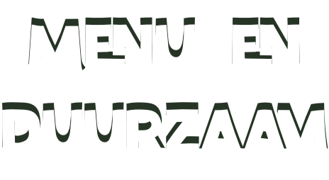
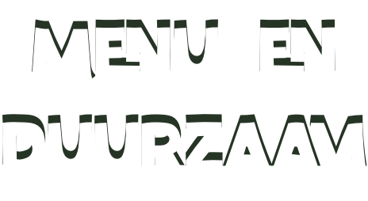

Menu en Duurzaam
Bij Green Farmer’s vind je een gevarieerd menu vol plantaardige gerechten die zowel lekker als voedzaam zijn. Van smakelijke burgers en hotdogs tot frisse salades en decadente desserts elk gerecht is ontworpen om je smaakpapillen te verrassen.
De gerechten zijn gemaakt met hoogwaardige ingrediënten, zoals Redefine Meat, en bieden een heerlijke, innovatieve ervaring voor zowel veganisten als nieuwsgierige smaakliefhebbers.

Waarom is het Duurzaam?
Green Farmer’s zet zich in voor een duurzamere toekomst door alleen plantaardige ingrediënten te gebruiken. Dit vermindert de ecologische voetafdruk die traditionele dierlijke producten achterlaten.
Daarnaast werkt het restaurant met lokale, biologische leveranciers om de impact van transport te minimaliseren en de versheid van de ingrediënten te waarborgen. Door te kiezen voor plantaardige alternatieven wordt niet alleen je gezondheid bevorderd, maar ook de gezondheid van de planeet.